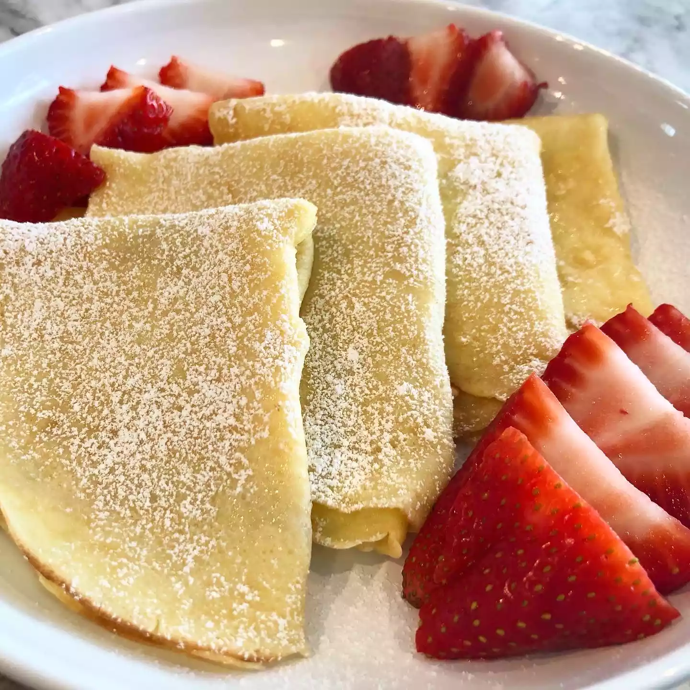

Crepes

Description
Quick, easy, delicious and highly customizable. These words best sum up this recipe.
Fluffy crepes, you can fill with anything your heart desires. Chocolate, chicken, banana, jam, strawberries, ham, cheese, all are fair game when we talk about crepe. Even though it started as a traditional french delicacy, nowadays every kitchen style in the world has a variation of it.
Ingredients
- 1 cup flour
- 2 eggs
- 1/2 cup milk
- 1/2 cup water
- 1/4 teaspoon salt
- 2 tablespoons melted butter
Steps
- Whisk flour and eggs together in a large mixing bowl; gradually add in milk and water, stirring to combine. Add salt and melted butter; beat until smooth.
- Heat a lightly oiled griddle or frying pan over medium-high heat. Pour or scoop the batter onto the griddle, using approximately 1/4 cup for each crêpe. Tilt the pan with a circular motion so that the batter coats the surface evenly.
- Cook until the top of the crêpe is no longer wet and the bottom has turned light brown, 1 to 2 minutes. Run a spatula around the edge of the skillet to loosen the crêpe; flip and cook until the other side has turned light brown, about 1 minute more. Serve hot.